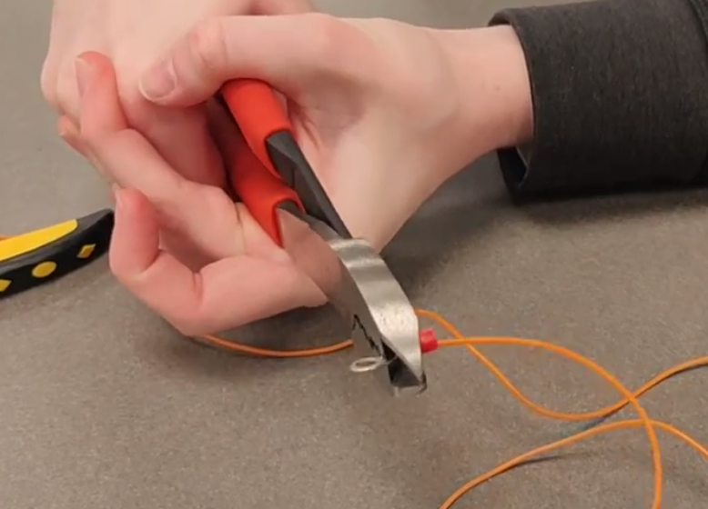
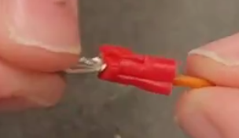

This is a guide to crimping connectors onto leads for different electronics
Ring Connectors
We can maintain more secure electrical connections by using ring connectors on a terminal block or to create the
block sensors. We use these ring connectors by crimping wire leads into them. To attach ring connectors:
Strip a long section of the wire lead
Twist the filaments of the lead so they are all solidly together
Sit the ring connector in the crimper so that the smaller upper section of the plastic piece sits in a part of the
crimper that is very close to its size, and so that the top part of the crimper will come down slightly to one side
of the seam in the metal connector
The section indicated is the specified smaller section of the plastic cover on the connectorThe arrow points to the seam in the metal contact that you should look to come down slightly to one
side ofProper placement of the connector in the crimper for first compressionCloseup of proper placement of the connector in the crimper for the first compression
Feed the stripped portion of the lead into the metal connector on the inside of the crimper.
Watch the lead as you’re crimping, since it’s easy for high gauge wire to slip out of connectors even when
they’ve been crimped down. Make sure the crimper catches the lead solidly in the crimped connector
Press the crimper together. You’ll have to press pretty hard

Release the crimper
Shift the connector so the top part of the crimper will come down on the other side of the seam in the metal
connector
Press the crimper together again. This time, you won’t need as much force
Tug gently on the lead and the connector, testing the connection
The following steps are optional. However, since heat shrinking the connector ensures a safe and solid electrical
connection, it is strongly encouraged.
Place the larger part of the plastic part of the connector in a large part of the crimper
Gently compress the crimper, giving the large plastic section a sort of pleat
Place the larger plastic section into a smaller part of the crimper, with the pleat facing out of the side and away
from the joint of the crimper
Proper placement of the ring connector's pleat in the crimper
Compress the larger plastic section as small as possible

Cut a section of heat shrink to cover a small portion of the lead and the connector up to the ring
Slide the heat shrink over the connector, snugly up to the ring
Apply heat to the heat shrink until the connector is snugly covered
See this instructional video for a walk through of the crimping process